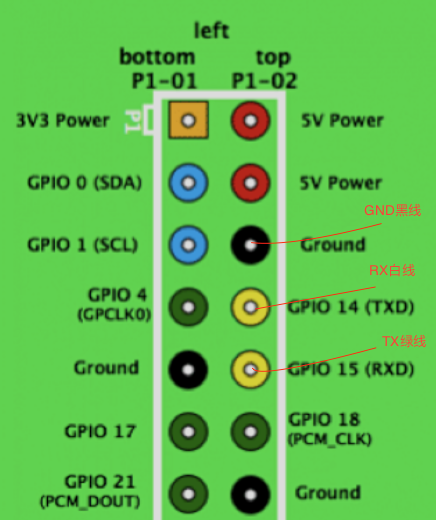
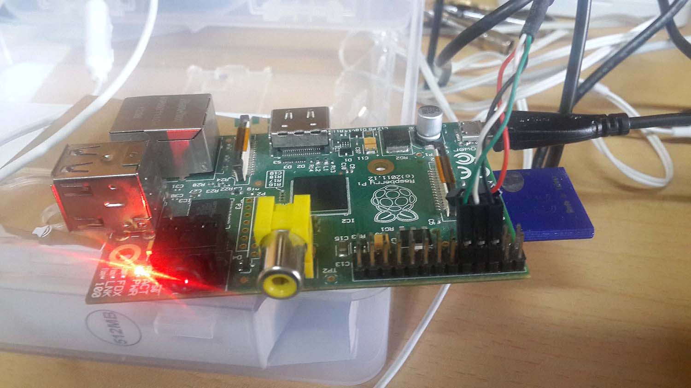
注意，在Mac OS 10.11下需要下载最新版的驱动，链接
# cat /proc/cpuinfoCPU型号输出信息如下：
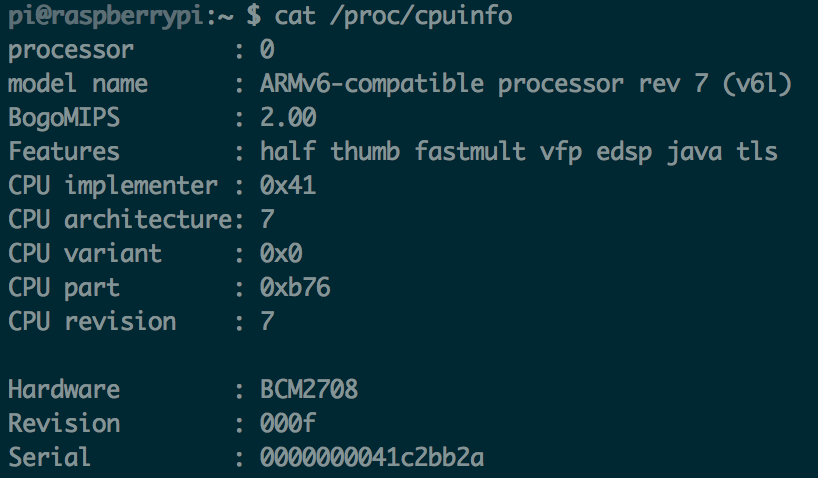
# cat /proc/meminfo时钟频率：
# cat /sys/devices/system/cpu/cpu0/cpufreq/scaling_cur_freq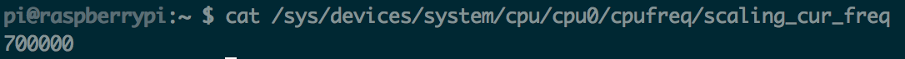
内存大小信息如下：
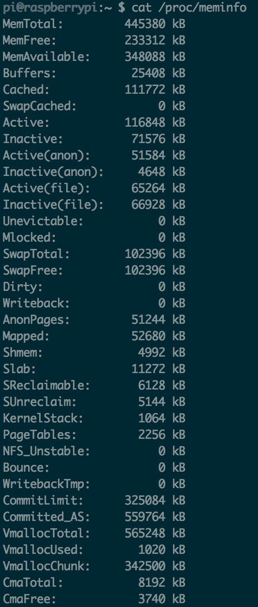
打开路由器后台界面，我们查看连接设备
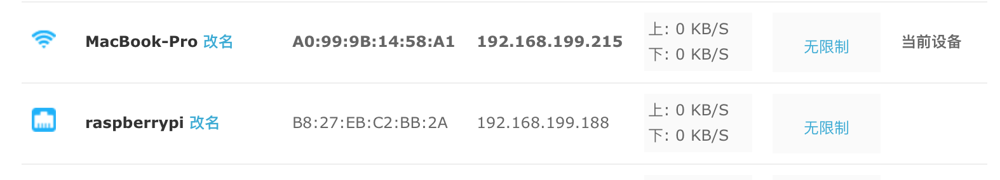
MacBook-Pro是PC端，raspberrypi是树莓派板卡端，两设备的ip均可得到。
我们先证明两台设备都可以连接外网(ping通百度网址)：
# ping www.baidu.comMacBook:
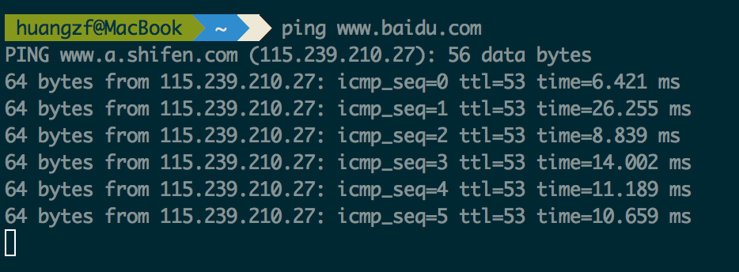
Raspberrypi:
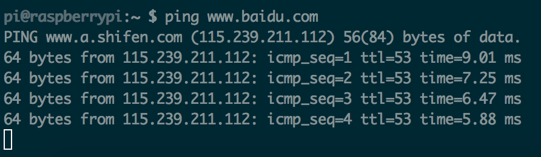
然后实施两机互ping：
PC ping树莓派：
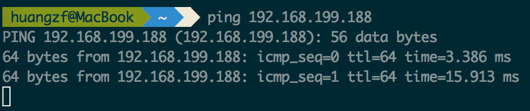
树莓派ping PC：
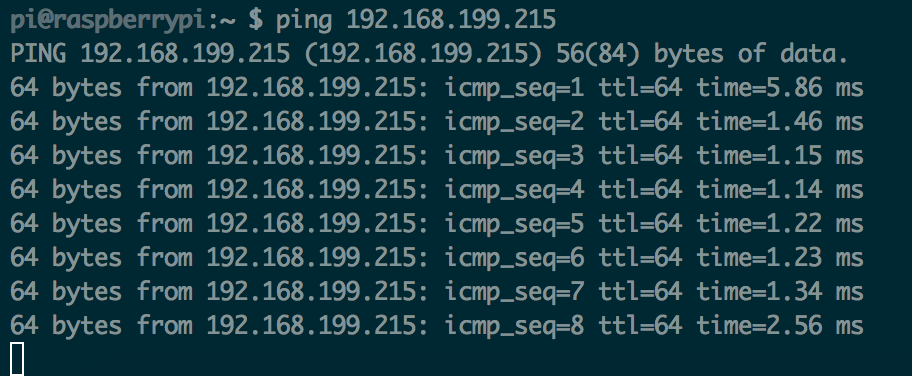
在路由上查看发现Rpi的ip地址为192.168.1.100，于是ssh连接之：
# ssh pi@192.168.1.100password输入：
password: raspberry连接后结果如下：
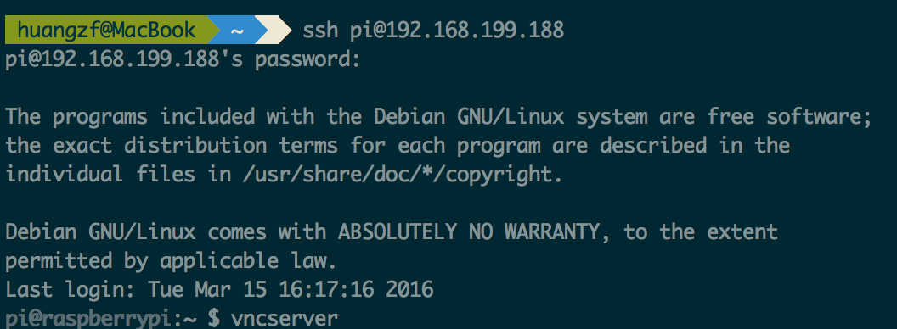
执行w命令，可查看不同用户不同端口的登录，结果如下：
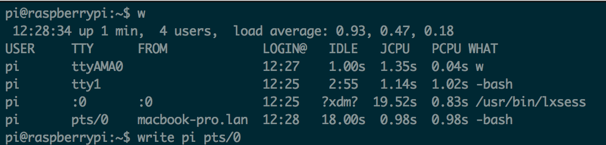
可以清楚地看到有一台MacBook连接了树莓派，我们同时用ssh和串口访问树莓派，在串口连接的终端上使用write命令：
# write pi pts/0在终端可以发送字符信息，此时ssh连接Rpi的终端可以显示我发送的内容。
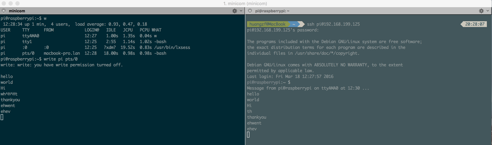
配置文件位于目录/etc/samba/smb.conf, 内容如下：
#
# Sample configuration file for the Samba suite for Debian GNU/Linux.
#
#
# This is the main Samba configuration file. You should read the
# smb.conf(5) manual page in order to understand the options listed
# here. Samba has a huge number of configurable options most of which
# are not shown in this example
#
# Some options that are often worth tuning have been included as
# commented-out examples in this file.
# - When such options are commented with ";", the proposed setting
# differs from the default Samba behaviour
# - When commented with "#", the proposed setting is the default
# behaviour of Samba but the option is considered important
# enough to be mentioned here
#
# NOTE: Whenever you modify this file you should run the command
# "testparm" to check that you have not made any basic syntactic
# errors.
#======================= Global Settings =======================
[global]
security=share //用于登陆域，或用户验证登陆，安全等级
## Browsing/Identification ###
# Change this to the workgroup/NT-domain name your Samba server will part of
workgroup = WORKGROUP
# Windows Internet Name Serving Support Section:
# WINS Support - Tells the NMBD component of Samba to enable its WINS Server
# wins support = no //设置本地为wins服务器
# WINS Server - Tells the NMBD components of Samba to be a WINS Client
# Note: Samba can be either a WINS Server, or a WINS Client, but NOT both
; wins server = w.x.y.z # 指定wins服务器的网络地址
# This will prevent nmbd to search for NetBIOS names through DNS.
dns proxy = no //当wins服务器在wins中找不到名字的话，就会查找dns
#### Networking ####
# The specific set of interfaces / networks to bind to
# This can be either the interface name or an IP address/netmask;
# interface names are normally preferred
; interfaces = 127.0.0.0/8 eth0 //设置samba将对哪些网络接口进行服务
# Only bind to the named interfaces and/or networks; you must use the
# 'interfaces' option above to use this.
# It is recommended that you enable this feature if your Samba machine is
# not protected by a firewall or is a firewall itself. However, this
# option cannot handle dynamic or non-broadcast interfaces correctly.
; bind interfaces only = yes //samba只对这几个网络接口服务
#### Debugging/Accounting ####
# This tells Samba to use a separate log file for each machine
# that connects
log file = /var/log/samba/log.%m #日志文件
# Cap the size of the individual log files (in KiB).
max log size = 1000 #日志文件的大小
# If you want Samba to only log through syslog then set the following
# parameter to 'yes'.
# syslog only = no #只使用系统日志，关闭samba日志
# We want Samba to log a minimum amount of information to syslog. Everything
# should go to /var/log/samba/log.{smbd,nmbd} instead. If you want to log
# through syslog you should set the following parameter to something higher.
syslog = 0 # syslog的日志级(0,err)(1,warning)(2,notice)(3,ifno)(4或以上，debug)
# Do something sensible when Samba crashes: mail the admin a backtrace
panic action = /usr/share/samba/panic-action %d
####### Authentication #######
# Server role. Defines in which mode Samba will operate. Possible
# values are "standalone server", "member server", "classic primary
# domain controller", "classic backup domain controller", "active
# directory domain controller".
#
# Most people will want "standalone sever" or "member server".
# Running as "active directory domain controller" will require first
# running "samba-tool domain provision" to wipe databases and create a
# new domain.
server role = standalone server
# If you are using encrypted passwords, Samba will need to know what
# password database type you are using.
passdb backend = tdbsam
obey pam restrictions = yes //当encrypt passwords = yes 时，samba 会忽略pam的验证，因为pam不支持(挑战/回答)验证机制，他只用来做平文密码的验证
# This boolean parameter controls whether Samba attempts to sync the Unix
# password with the SMB password when the encrypted SMB password in the
# passdb is changed.
unix password sync = yes //当用户改变samba加密的密码时,SAMBA会试着更新UNIX用户密码
# For Unix password sync to work on a Debian GNU/Linux system, the following
# parameters must be set (thanks to Ian Kahan <<kahan@informatik.tu-muenchen.de> for
# sending the correct chat script for the passwd program in Debian Sarge).
passwd program = /usr/bin/passwd %u //这个就指定更改密码的命令
passwd chat = *Enter\snew\s*\spassword:* %n\n *Retype\snew\s*\spassword:* %n\n *password\supdated\ssuccessfully* .
# This boolean controls whether PAM will be used for password changes
# when requested by an SMB client instead of the program listed in
# 'passwd program'. The default is 'no'.
pam password change = yes
# This option controls how unsuccessful authentication attempts are mapped
# to anonymous connections
map to guest = bad user
########## Domains ###########
#
# The following settings only takes effect if 'server role = primary
# classic domain controller', 'server role = backup domain controller'
# or 'domain logons' is set
#
# It specifies the location of the user's
# profile directory from the client point of view) The following
# required a [profiles] share to be setup on the samba server (see
# below)
; logon path = \\%N\profiles\%U
# Another common choice is storing the profile in the user's home directory
# (this is Samba's default)
# logon path = \\%N\%U\profile
# The following setting only takes effect if 'domain logons' is set
# It specifies the location of a user's home directory (from the client
# point of view)
; logon drive = H:
# logon home = \\%N\%U
# The following setting only takes effect if 'domain logons' is set
# It specifies the script to run during logon. The script must be stored
# in the [netlogon] share
# NOTE: Must be store in 'DOS' file format convention
; logon script = logon.cmd
# This allows Unix users to be created on the domain controller via the SAMR
# RPC pipe. The example command creates a user account with a disabled Unix
# password; please adapt to your needs
; add user script = /usr/sbin/adduser --quiet --disabled-password --gecos "" %u
# This allows machine accounts to be created on the domain controller via the
# SAMR RPC pipe.
# The following assumes a "machines" group exists on the system
; add machine script = /usr/sbin/useradd -g machines -c "%u machine account" -d /var/lib/samba -s /bin/false %u
# This allows Unix groups to be created on the domain controller via the SAMR
# RPC pipe.
; add group script = /usr/sbin/addgroup --force-badname %g
############ Misc ############
# Using the following line enables you to customise your configuration
# on a per machine basis. The %m gets replaced with the netbios name
# of the machine that is connecting
; include = /home/samba/etc/smb.conf.%m
# Some defaults for winbind (make sure you're not using the ranges
# for something else.)
; idmap uid = 10000-20000
; idmap gid = 10000-20000
; template shell = /bin/bash
# Setup usershare options to enable non-root users to share folders
# with the net usershare command.
# Maximum number of usershare. 0 (default) means that usershare is disabled.
; usershare max shares = 100
# Allow users who've been granted usershare privileges to create
# public shares, not just authenticated ones
usershare allow guests = yes
#======================= Share Definitions =======================
[homes]
comment = Home Directories
browseable = no
# By default, the home directories are exported read-only. Change the
# next parameter to 'no' if you want to be able to write to them.
read only = yes
# File creation mask is set to 0700 for security reasons. If you want to
# create files with group=rw permissions, set next parameter to 0775.
create mask = 0700
# Directory creation mask is set to 0700 for security reasons. If you want to
# create dirs. with group=rw permissions, set next parameter to 0775.
directory mask = 0700
# By default, \\server\username shares can be connected to by anyone
# with access to the samba server.
# The following parameter makes sure that only "username" can connect
# to \\server\username
# This might need tweaking when using external authentication schemes
valid users = %S //可登陆用户
# Un-comment the following and create the netlogon directory for Domain Logons
# (you need to configure Samba to act as a domain controller too.)
;[netlogon]
; comment = Network Logon Service
; path = /home/samba/netlogon
; guest ok = yes
; read only = yes
# Un-comment the following and create the profiles directory to store
# users profiles (see the "logon path" option above)
# (you need to configure Samba to act as a domain controller too.)
# The path below should be writable by all users so that their
# profile directory may be created the first time they log on
;[profiles]
; comment = Users profiles
; path = /home/samba/profiles
; guest ok = no
; browseable = no
; create mask = 0600
; directory mask = 0700
[printers]
comment = All Printers
browseable = no
path = /var/spool/samba
printable = yes
guest ok = no
read only = yes
create mask = 0700
# Windows clients look for this share name as a source of downloadable
# printer drivers
[print$]
comment = Printer Drivers
path = /var/lib/samba/printers
browseable = yes
read only = yes
guest ok = no
# Uncomment to allow remote administration of Windows print drivers.
# You may need to replace 'lpadmin' with the name of the group your
# admin users are members of.
# Please note that you also need to set appropriate Unix permissions
# to the drivers directory for these users to have write rights in it
; write list = root, @lpadmin
[share]
comment = share all //权限为完全共享
path = /home/samba
browseable = yes
public = yes
writable = no在PC Mac上 System Preference->Sharing->File Sharing
看到共享文件夹名为samba，在主目录下。
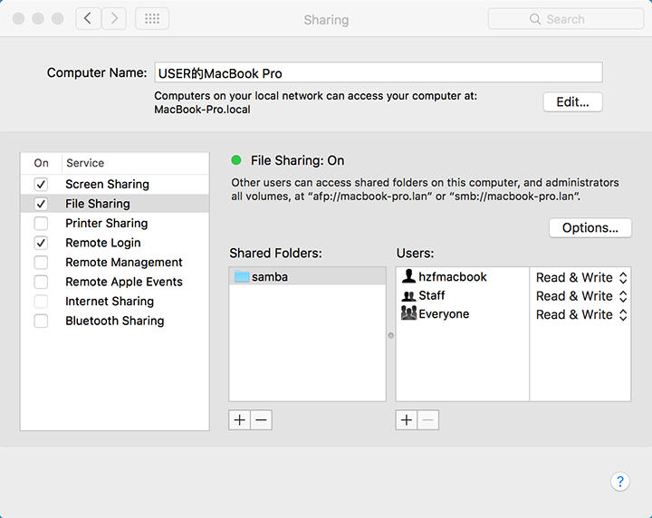
然后在System Preference->Users & Groups->Guest User下，在Allow guest users to connect to shared folders
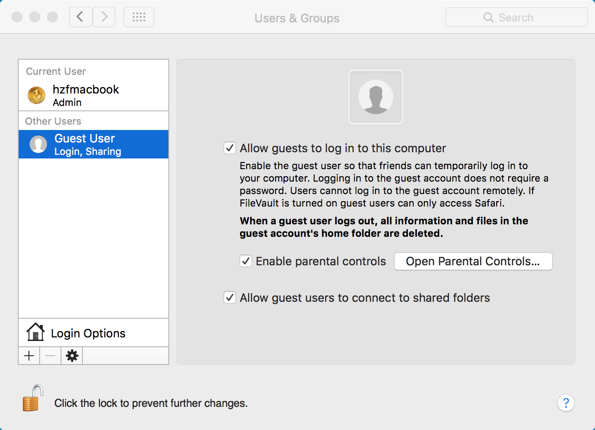
在树莓派上用Guest用户登录PC，执行smbclient连接，结果如下：
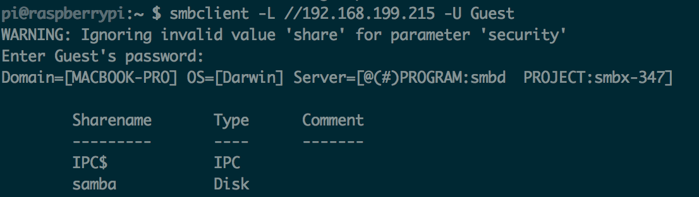
此时smb连接已经成功，再使用mount命令挂载到/mnt目录下：(samba目录下原有Main.java文件)
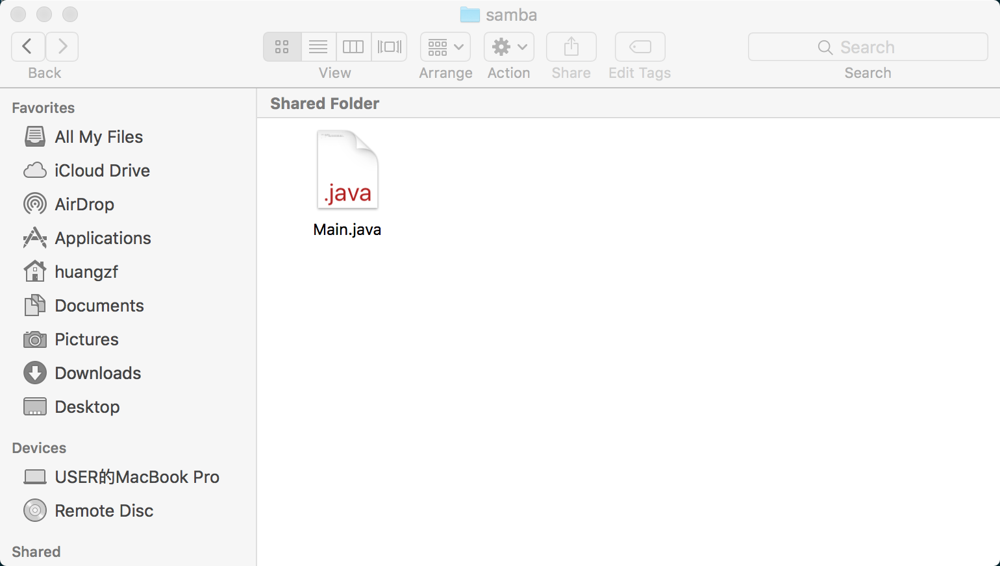
在/mnt目录下查看，发现Main.java文件，故挂载成功，samba共享完成。
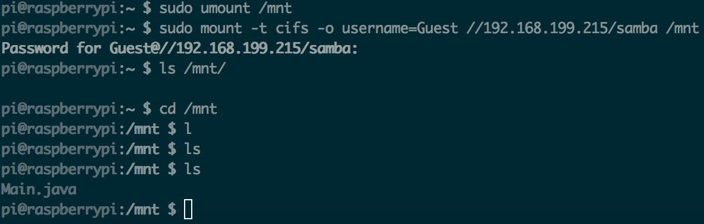
在树莓派上配置/etc/ssh/ssh_config
在/etc/ssh/ssh_config的末尾添加
Subsystem sftp internal-sftp
Match Group sftp
ChrootDirectory /home/samba
ForceCommand internal-sftp
AllowTcpForwarding no
X11Forwarding no在PC上用sftp命令连接树莓派，结果如下：
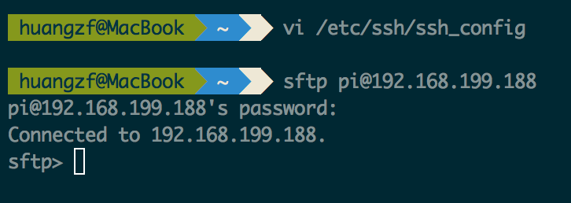
以下我们分别用get和put命令，从板卡的主目录下载Main.java，将PC主目录下的main.c上传到板卡主目录下。
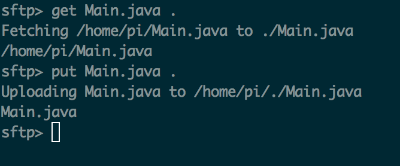
下载SecureCRT for Mac，串口连接到Rpi后，在板上输入rx filename命令，使其处于等待接收文件状态：
# rx main.cPC端打开SecureCRT for Mac，Transfer->Send Xmodem
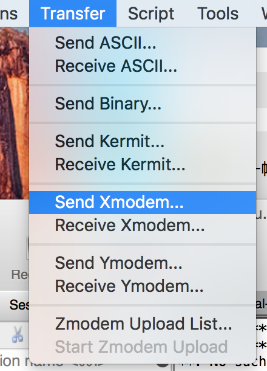
选择main.c文件，点击OK
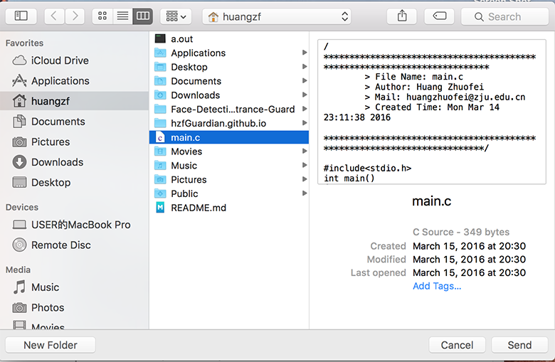
然后观察板上terminal，发现文件已成功接收。
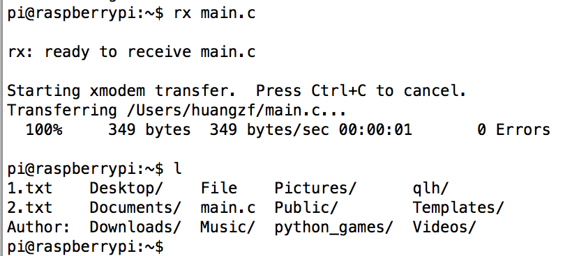
树莓派下载arm-linux-gnueabi工具链，ubuntu 14.04下：
# sudo apt-get install arm-linux-gnueabi交叉编译程序main.c，并证明它是ARM的可执行文件。
在ubuntu的主目录下编写main.c的Hello World程序，执行
# arm-linux-gnueabi-gcc main.c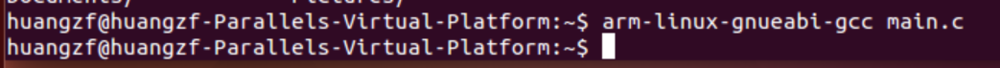
生成a.out文件后，在Rpi上用scp将可执行文件下载到板子的当前目录下
# scp huangzf@macbook-pro.lan:~/a.out .然后运行文件，显示Hello World!，说明运行成功，即该交叉编译的产物是ARM的可执行文件。
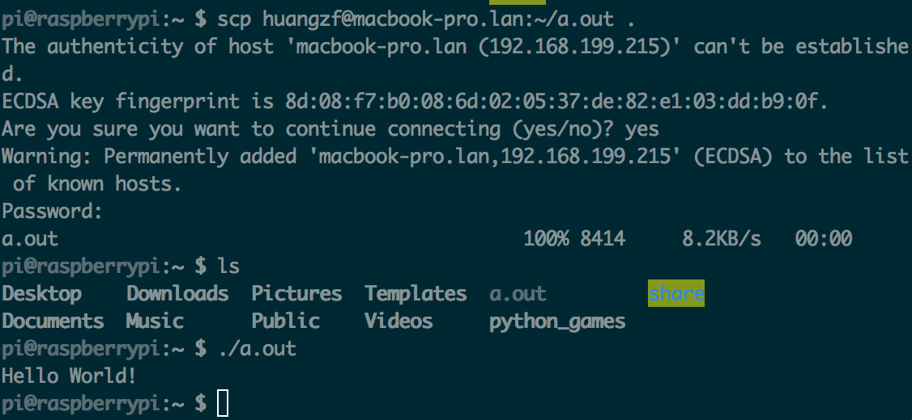
这里使用vnc连接方式，在PC端配置VNC Viewer，RPi上配置VNC Server。
VNC Server: 在RPi上命令行执行：
# sudo apt-get install vncserver在RPi上初始化vncserver:
# vncserver此时需要设置密码: 123456，弹出如下信息，该信息告诉我们用vncviewer连接Rpi时，要使用1号端口
New 'raspberrypi:7 (pi)' desktop is raspberrypi:7
Starting applications specified in /home/pi/.vnc/xstartup
Log file is /home/pi/.vnc/raspberrypi:7.logVNC Viewer: https://www.realvnc.com/download/viewer/
开启后界面如下，在VNC Server栏输入
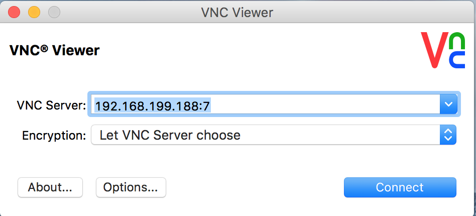
点击connect，连接后结果截图(在图形桌面中右键启动terminal)：
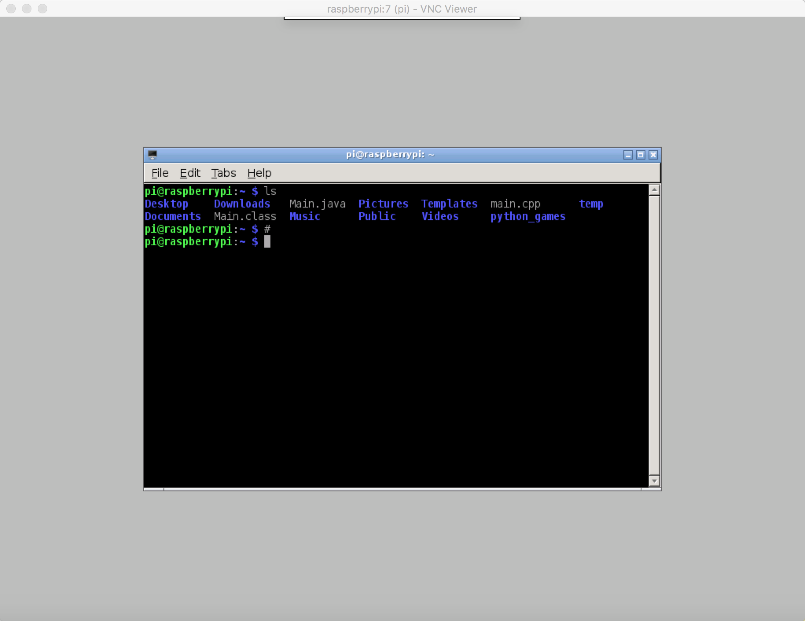
此时远程图形桌面连接成功。
本机上安装交叉编译的g++工具：
# sudo apt-get install g++-arm-linux-gnueabi编译main.cpp文件：
# arm-linux-gnueabi-g++ main.cpp得到a.out文件用scp命令传输到树莓派上：
# scp a.out pi@192.168.199.125运行结果如下：(图中含有main.cpp的文件内容，内使用vector)
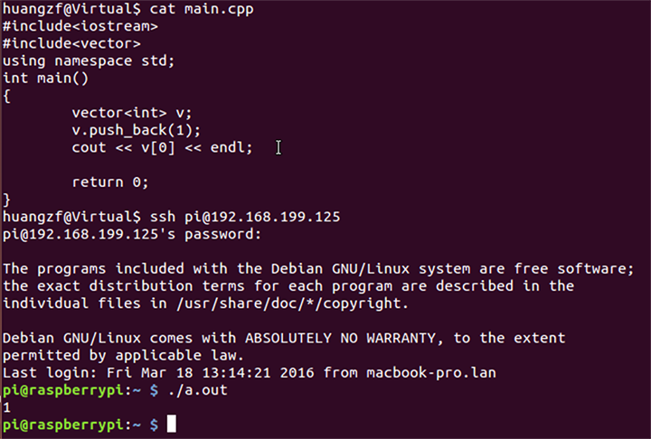